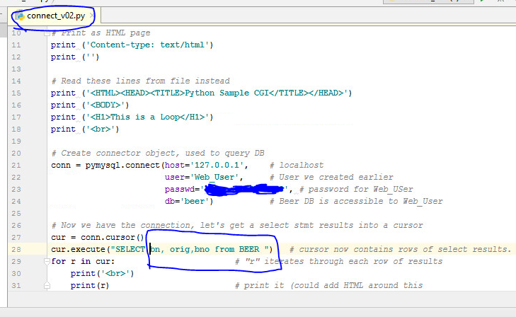
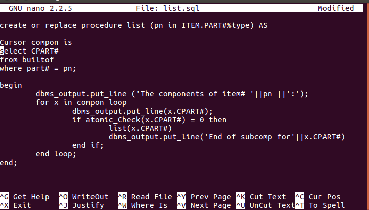

Programming
Examples of work
Java

Pictured here is one of many Java projects I have worked on at NSCC. In this example, I created a GUI and added buttons to spawn my own 3D, rotating shapes, which then bounced and spun around inside the display. I also have created many projects similar to this, such as a GUI which writes user input to a file, or a display with multiple balls bouncing inside, each with their own properties such as arc and explosion speed. NSCC has helped train me not only in how to create these projects, but also in documentation. We are required to generate JavaDocs for large projects, and are encouraged to write cleanly formatted, easy to understand code. I'm quite comfortable with documentation not only in IDEs but also in word, and have learned to write strong formal documents at Nova Scotia Community College.
PySQL

Shown here is a combination of languages, used in a project that used Windows IIS to take information from a "Beer database" and display it on a webpage using Python and HTML. Although individually our studies of Python and SQL went deeper then this, I feel this is a good showcase of the hands on approach NSCC takes with their courses. There is real world application for this simple exercise, and I am glad that I got this experience at NSCC in order to truly learn some application for what we study.
HTML/CSS

Showcased here is a website that I was in charge of creating with a group of peers. We were tasked with creating something to improve student life at NSCC, so we chose to create a website for a Foosball league. Not only was this a learning experience and introduction to the challenges of managing a small group, but it was also a good learning experience for version control. Often, we had multiple people working on the same file, and it was hard to manage everyones creative vision while keeping deadlines, but we ended up with a site that we were proud of. I improved not only my HTML/CSS skills in this project, but also my graphic design skills as well, as I was in charge of creating a logo and backgrounds/images to use.
SQL

Pictured here is an example of a procedure I created using SQL plus. During my 1st semester at NSCC, I learned a strong foundation with querying and joining tables, as well as creating and populating with data. We also briefly touched on MongoDB as an example of Document based databases.
C

Although C is not the most useful or relevant language I've learned, I feel having a strong grasp on pointers and arrays will benefit me in other languages. Shown here is a merge sort and selection sort. I also have written programs calculating mass for a certian amount of spheres, and a bisection point for sine waves.
Other work:
For more information about languages and skills I have acquired please check out skills. Feel free to contact me with any further questions or inquiries.